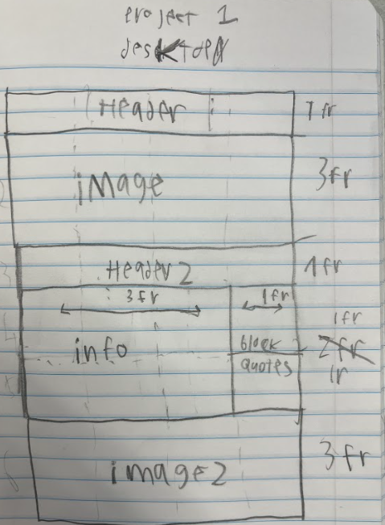
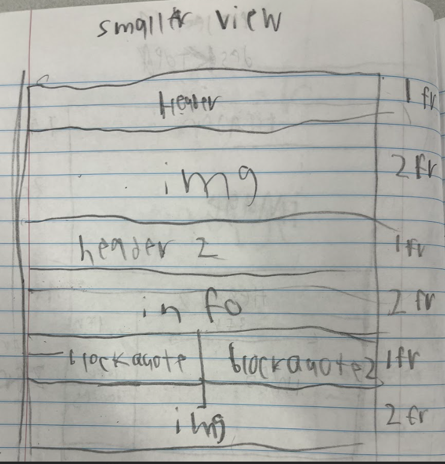

make a one page site
must use flexbox and/or css grid
in spec, mirror the choosen image as closely as posible
make this documentation page, im not sure im doing this quite right.... oh well, it stays for now
sketch plan for when the page is narrower and take a photo, paste in here
zip all of the project1 files
submit a direct link to "source" pdf, a link to "spec.html", a link to doc.html... include image of sketched plan and how to add responsivenes to the page..... ok
my plan to add responsivenes..... uhhh maybe some link to like... certain portions of text... i dont know too much, my layout is kinda just a magazine. i guess i could make words or sentences light up or something when hovering over them... maybe